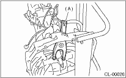

1. Lubricate the following points with the specified grease prior to assembly.
• Contact surface of release lever and pivot
• Contact surface of release lever and bearing
• Transmission main shaft spline (Use grease containing molybdenum disulphide.)
• Contact surface of release lever and operating cylinder
2. While pushing the release lever against the pivot and twisting left and right, fit the spring onto the stepped portion of pivot. Apply grease (KOPR-KOTE: Part No. 003603001) to the contact point of the release lever and operating cylinder.
3. Confirm that the lever spring is securely fitted by observing it through the main case hole.

|
(A) |
Release lever |
4. Install the release bearing and fasten it with two clips. (Non-turbo model)
5. Install the release bearing. (Turbo model)
6. Install the release lever dust cover.

|
(A) |
Release lever |
|
(B) |
Release lever dust cover |
7. Check the bearing for smooth movement by operating the release lever.
8. Install the transmission assembly.